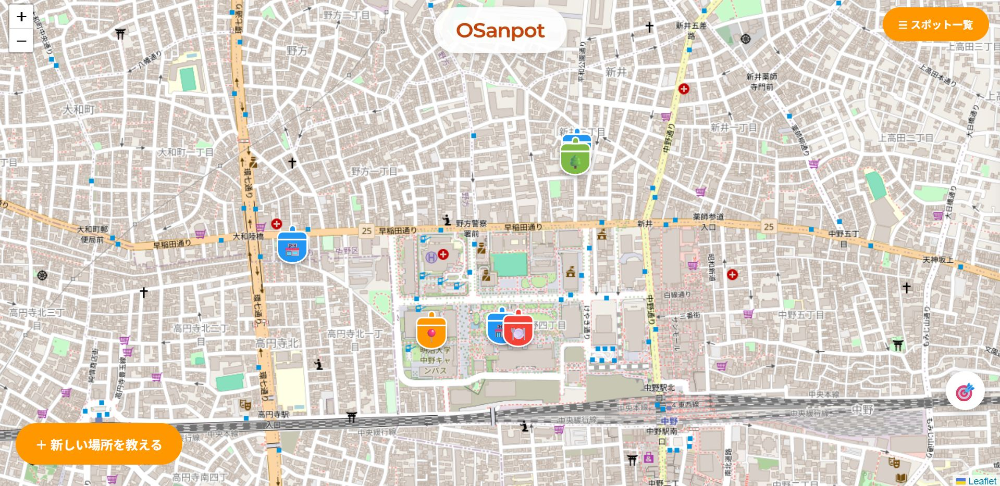
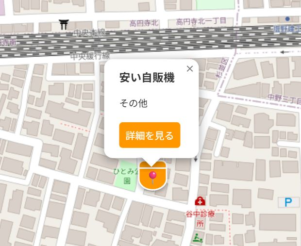
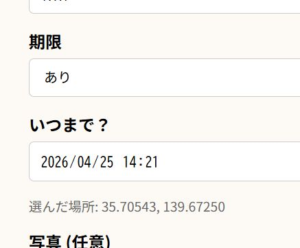
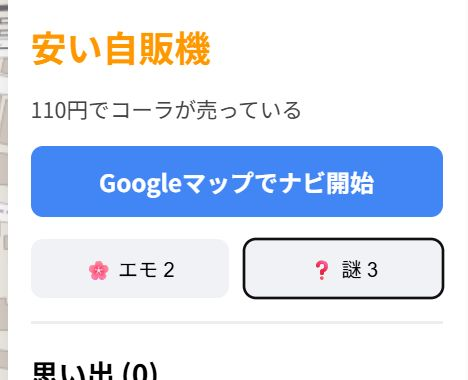

OSanpot（おさんぽっと）
ウェブプログラミング実習 共同開発
サービスコンセプト
「情報の鮮度」と「その場の感情」を共有する
OSanpotは、散歩中に発見した小さな発見を位置情報と共に共有する地図連動型Webサービス。
Googleマップのような施設や公園などの大きなものの共有ではなく、「ここに小さなお地蔵さんがいる」や、「きれいなベンチがある」のような、小さな情報を共有することができる。 また、永続的な情報ではなく、「ここから桜が見える」「日影が涼しい」といった、季節やその時期ならではの情報を共有することも出来る。投稿に「表示期限」を設けられる仕組みが最大の特徴。

主な機能と体験

1. 地図連動の投稿閲覧
Leaflet.jsを使用し、現在地周辺の情報を把握できる。

2. 期間限定フラグ
投稿時に有効期限を設定可能。期限が過ぎたデータは自動的に地図から消去される。

3. リアルタイム反応
AJAX通信により、ページをリロードせずにリアクションを送受信できる。
技術的な取り組み
担当箇所
私は本作品において、全体のシステムの設計、地図上に情報を表示する仕組みから、データの保存先となるデータベースの設計、情報の新しさを自動で管理するプログラムを担当した。
システムの基盤の設計
授業で作成したブログをもとに、PHPによるサーバーサイド・プログラムの作成。Leaflet.jsを用いた地図の表示。
DB設計（SQLite）
spots（スポット）、comments（コメント）、reactions（リアクション）の3テーブルを構築。Upsert形式（既にデータがあれば更新、なければ新規追加）を採用した。
地図と位置情報の連携
地図をクリックした場所の座標（緯度・経度）を自動で読み取り、そのまま投稿フォームに反映させる仕組みを作った。これにより、ユーザーが手入力することなく正確な場所を登録できる工夫をした。
自動で消える期限管理
「期間限定」のスポットやコメントが、設定した時間を過ぎると自動的に地図から消えるプログラムを作成した。サーバー側で常に「今の時刻」と比較して、最新の情報だけを表示するようにしている。
情報の種類による見た目の制御
データベースに保存された情報をもとに、普通の場所は「白」、期間限定の場所は「赤」と、ピンの枠の色を自動で塗り分けるようにした。一目でどんなスポットかが分かる視覚的な使いやすさを追求した。